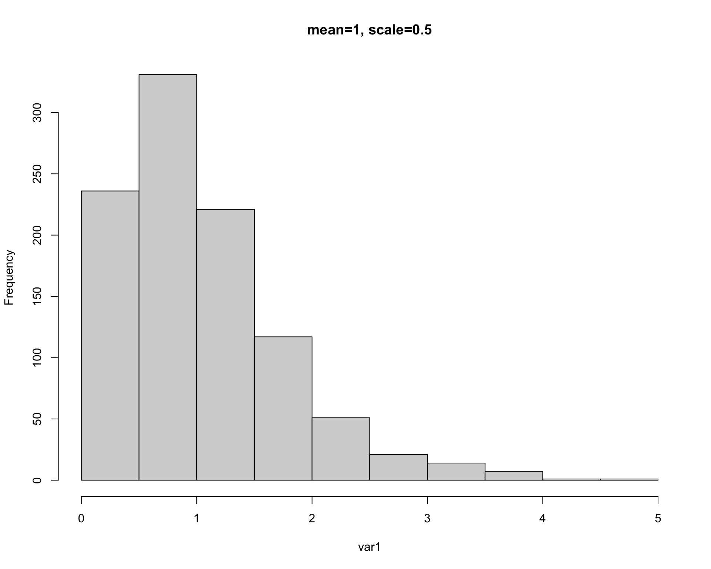
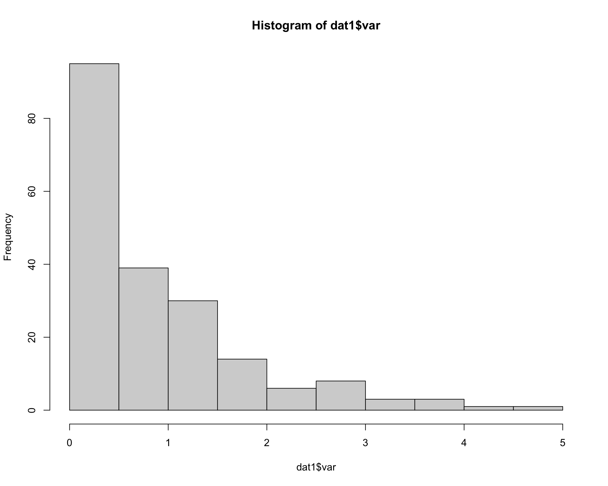

Chapter 3 Module 2
3.1 2A. Data Management Part 1
We will practice plotting data using the iris dataset.
We will use the iris dataset for this section
data(iris) # load data (already exists in base R)head(iris) # print first 6 lines of dataset## Sepal.Length Sepal.Width Petal.Length Petal.Width Species
## 1 5.1 3.5 1.4 0.2 setosa
## 2 4.9 3.0 1.4 0.2 setosa
## 3 4.7 3.2 1.3 0.2 setosa
## 4 4.6 3.1 1.5 0.2 setosa
## 5 5.0 3.6 1.4 0.2 setosa
## 6 5.4 3.9 1.7 0.4 setosatail(iris) # print last 6 lines of dataset## Sepal.Length Sepal.Width Petal.Length Petal.Width Species
## 145 6.7 3.3 5.7 2.5 virginica
## 146 6.7 3.0 5.2 2.3 virginica
## 147 6.3 2.5 5.0 1.9 virginica
## 148 6.5 3.0 5.2 2.0 virginica
## 149 6.2 3.4 5.4 2.3 virginica
## 150 5.9 3.0 5.1 1.8 virginicastr(iris) # print 'structure' of dataset giving you info about each column## 'data.frame': 150 obs. of 5 variables:
## $ Sepal.Length: num 5.1 4.9 4.7 4.6 5 5.4 4.6 5 4.4 4.9 ...
## $ Sepal.Width : num 3.5 3 3.2 3.1 3.6 3.9 3.4 3.4 2.9 3.1 ...
## $ Petal.Length: num 1.4 1.4 1.3 1.5 1.4 1.7 1.4 1.5 1.4 1.5 ...
## $ Petal.Width : num 0.2 0.2 0.2 0.2 0.2 0.4 0.3 0.2 0.2 0.1 ...
## $ Species : Factor w/ 3 levels "setosa","versicolor",..: 1 1 1 1 1 1 1 1 1 1 ...3.1.1 Making and modifying variables
Here’s how we make a new column that is a unique number:
iris$Plant <- 1:length(iris$Species)Here’s how we make a new column that is total petal and sepal length:
iris$PetSep.Length <- iris$Petal.Length+iris$Sepal.LengthHere’s how to make a new column that log-transforms PetSep.Length: iris\(lnPS.Len <- log(iris\)PetSep.Length)
iris$lnPS.Len <- log(iris$PetSep.Length)Here’s how to make a new column for ‘genus.’ The only values you want is “Iris”:
iris$Genus <- 'Iris'Here’s how to combine two columns:
iris$GenSpp <- paste(iris$Genus, iris$Species, sep="_")Here’s how to change Species ‘versicolor’ to ‘versi’ in the GenSpp column:
iris$GenSpp <- gsub('versicolor', 'versi', iris$GenSpp ) ## looks for 'versicolor' and replaces it with 'versi' in the column iris$Speciessub() can be used for replacement but will only do 1 replacement and gsub() can also be used for replacement but with all matching instances.
You can use gsub() to add genus name to species column (alternative to making new column and then pasting together).
iris$GenSpp1 <- gsub('.*^', 'Iris_', iris$Species)3.1.2 Variables with the tidyverse
library(tidyverse) # load package tidyverse (install if needed)
library(viridis)
data(iris) # reload iris to clear changes from above
iris1 <- as_tibble(iris) # load iris and convert to tibbleglimpse(iris1) ## similar to str(), just glimpses data## Rows: 150
## Columns: 5
## $ Sepal.Length <dbl> 5.1, 4.9, 4.7, 4.6, 5.0, 5.4, 4.6, 5.0, 4.4, 4.9, 5.4, 4.…
## $ Sepal.Width <dbl> 3.5, 3.0, 3.2, 3.1, 3.6, 3.9, 3.4, 3.4, 2.9, 3.1, 3.7, 3.…
## $ Petal.Length <dbl> 1.4, 1.4, 1.3, 1.5, 1.4, 1.7, 1.4, 1.5, 1.4, 1.5, 1.5, 1.…
## $ Petal.Width <dbl> 0.2, 0.2, 0.2, 0.2, 0.2, 0.4, 0.3, 0.2, 0.2, 0.1, 0.2, 0.…
## $ Species <fct> setosa, setosa, setosa, setosa, setosa, setosa, setosa, s…mutate() will allow you create and modify variables:
iris1 <- iris1 %>% mutate(Plant=1:length(Species),
PetSep.Length=Petal.Length+Sepal.Length,
lnPS.Len=log(PetSep.Length),
Genus='Iris',
GenSpp=gsub('.*^', 'Iris_', Species))
## note that I am overwriting iris1. Use with cautionsummarize() calculates means, sd, min, max, etc. on a dataset
iris1 %>% summarize(mean(Petal.Length)) ## mean of Petal.Length in dplyr## # A tibble: 1 × 1
## `mean(Petal.Length)`
## <dbl>
## 1 3.76mean(iris1$Petal.Length) ## mean of Petal.Length in base R## [1] 3.758Here we summarize lnPS.Len by Species with both Tidyverse and base R:
means_PetLen1 <- iris1 %>% group_by(Species) %>%
summarize(Petal.Length=mean(Petal.Length)) ## tidy codemeans_PetLen2 <- aggregate(Petal.Length~Species, FUN="mean", data=iris1) ## base RHere we summarize multiple variables by species use summarize_all()
means1 <- iris1 %>%
select(Sepal.Length, Sepal.Width, Petal.Length,
Petal.Width,lnPS.Len, Species) %>%
group_by(Species) %>%
summarize_all(list(mean=mean,sd=sd,n=length))
means1## # A tibble: 3 × 16
## Species Sepal.Length_me… Sepal.Width_mean Petal.Length_me… Petal.Width_mean
## <fct> <dbl> <dbl> <dbl> <dbl>
## 1 setosa 5.01 3.43 1.46 0.246
## 2 versicolor 5.94 2.77 4.26 1.33
## 3 virginica 6.59 2.97 5.55 2.03
## # … with 11 more variables: lnPS.Len_mean <dbl>, Sepal.Length_sd <dbl>,
## # Sepal.Width_sd <dbl>, Petal.Length_sd <dbl>, Petal.Width_sd <dbl>,
## # lnPS.Len_sd <dbl>, Sepal.Length_n <int>, Sepal.Width_n <int>,
## # Petal.Length_n <int>, Petal.Width_n <int>, lnPS.Len_n <int>3.1.3 Reshape data for better usability
Here is how we reshape data from wide to long:
iris_long <- iris1 %>% group_by(Species) %>%
pivot_longer(cols=c(Sepal.Length, Sepal.Width, Petal.Length,
Petal.Width, lnPS.Len),
names_to = 'Trait',
values_to = 'value')
head(iris_long)## # A tibble: 6 × 7
## # Groups: Species [1]
## Species Plant PetSep.Length Genus GenSpp Trait value
## <fct> <int> <dbl> <chr> <chr> <chr> <dbl>
## 1 setosa 1 6.5 Iris Iris_setosa Sepal.Length 5.1
## 2 setosa 1 6.5 Iris Iris_setosa Sepal.Width 3.5
## 3 setosa 1 6.5 Iris Iris_setosa Petal.Length 1.4
## 4 setosa 1 6.5 Iris Iris_setosa Petal.Width 0.2
## 5 setosa 1 6.5 Iris Iris_setosa lnPS.Len 1.87
## 6 setosa 2 6.3 Iris Iris_setosa Sepal.Length 4.9We can calculate the mean, sd, and n for each Species X trait combo and then calculate SE:
means2 <- iris_long %>%
group_by(Species,Trait) %>%
summarize(mean=mean(value),
sd=sd(value),
n=length(value)) %>%
mutate(se=sd/sqrt(n)) %>%
filter(Trait!='lnPS.Len')
head(means2)## # A tibble: 6 × 6
## # Groups: Species [2]
## Species Trait mean sd n se
## <fct> <chr> <dbl> <dbl> <int> <dbl>
## 1 setosa Petal.Length 1.46 0.174 50 0.0246
## 2 setosa Petal.Width 0.246 0.105 50 0.0149
## 3 setosa Sepal.Length 5.01 0.352 50 0.0498
## 4 setosa Sepal.Width 3.43 0.379 50 0.0536
## 5 versicolor Petal.Length 4.26 0.470 50 0.0665
## 6 versicolor Petal.Width 1.33 0.198 50 0.0280Note that the previous code could all be done in one piped command:
means2a <- iris1 %>%
group_by(Species) %>%
pivot_longer(cols=c(Sepal.Length, Sepal.Width, Petal.Length,
Petal.Width, lnPS.Len), names_to = 'Trait',
values_to = 'value') %>%
group_by(Species,Trait) %>%
summarize(mean=mean(value),
sd=sd(value),
n=length(value)) %>%
mutate(se=sd/sqrt(n)) %>%
filter(Trait!='lnPS.Len')
means2a## # A tibble: 12 × 6
## # Groups: Species [3]
## Species Trait mean sd n se
## <fct> <chr> <dbl> <dbl> <int> <dbl>
## 1 setosa Petal.Length 1.46 0.174 50 0.0246
## 2 setosa Petal.Width 0.246 0.105 50 0.0149
## 3 setosa Sepal.Length 5.01 0.352 50 0.0498
## 4 setosa Sepal.Width 3.43 0.379 50 0.0536
## 5 versicolor Petal.Length 4.26 0.470 50 0.0665
## 6 versicolor Petal.Width 1.33 0.198 50 0.0280
## 7 versicolor Sepal.Length 5.94 0.516 50 0.0730
## 8 versicolor Sepal.Width 2.77 0.314 50 0.0444
## 9 virginica Petal.Length 5.55 0.552 50 0.0780
## 10 virginica Petal.Width 2.03 0.275 50 0.0388
## 11 virginica Sepal.Length 6.59 0.636 50 0.0899
## 12 virginica Sepal.Width 2.97 0.322 50 0.0456We can make plot, below are two plots to start with. One is ineffective and one is more effective.
ggplot(data=means2, aes(x=Species, y=mean, fill=Trait)) +
geom_point(size=5, position=position_dodge(width=0.25), pch=22) +
labs(y="Floral part measurement (mm)") +
geom_errorbar(aes(ymin=(mean-sd), ymax=(mean+sd)), width=.2,
position=position_dodge(width=0.25), lwd=1.5) +
scale_fill_viridis(discrete = T,
labels=c("Petal Length","Petal Width",
"Sepal Length", "Sepal Width"),
option="magma") +
theme(panel.border=element_rect(color="black",size=2, fill=NA)) +
xlab("Species")
ggplot(data=iris_long %>%
filter(Trait!='lnPS.Len'), aes(x=Species,
y=value,
fill=Species)) +
geom_boxplot() +
facet_wrap(~Trait, scales = 'free_y') +
labs(y="Floral part measurement (mm)") +
scale_fill_viridis(discrete = T,
option = "plasma",
direction = -1, begin=.2) +
theme_bw()3.2 2B. Data Management Part 2
We are still using the Iris data set as well as the tidyverse.
library(tidyverse)
library(viridis)
iris1 <- as_tibble(iris) # load iris and convert to tibbleHere we make plot of sepal.length by sepal.width in wide format:
ggplot(data=iris1, aes(x=Sepal.Width, y=Sepal.Length)) +
geom_point(color="#39568CFF") + ## color outside of aes() changes color of all points (ie. not mapped to a column)
facet_wrap(~Species) +
geom_smooth(method='lm',color="#39568CFF", fill="#39568CFF")+
theme_bw()We can reshape data for for comparing traits in different panels:
### reshape data from wide to long
iris_long <- iris1 %>% group_by(Species) %>%
pivot_longer(cols=c(Sepal.Length, Sepal.Width, Petal.Length, Petal.Width), names_to = 'Trait', values_to = 'value')
head(iris_long)## # A tibble: 6 × 3
## # Groups: Species [1]
## Species Trait value
## <fct> <chr> <dbl>
## 1 setosa Sepal.Length 5.1
## 2 setosa Sepal.Width 3.5
## 3 setosa Petal.Length 1.4
## 4 setosa Petal.Width 0.2
## 5 setosa Sepal.Length 4.9
## 6 setosa Sepal.Width 3Now we make a plot comparing species with traits on different panels:
ggplot(data=iris_long , aes(x=Species, y=value, fill=Species)) +
geom_boxplot() +
facet_wrap(~Trait, scales = 'free_y') +
labs(y="Floral part measurement (mm)") +
scale_fill_viridis(discrete = T,
option = "plasma",
direction = -1) +
theme_bw()3.3 2C. Data Exploration
For data exploration we need to load the following libraries:
library(tidyverse)
library(agridat)
library(corrplot)
library(EnvStats) We will use the Iris dataset.
data(iris) # load data (already exists in base R)
iris[8,3] <- 7 # plant data point for demo
head(iris) # print first 6 lines of dataset## Sepal.Length Sepal.Width Petal.Length Petal.Width Species
## 1 5.1 3.5 1.4 0.2 setosa
## 2 4.9 3.0 1.4 0.2 setosa
## 3 4.7 3.2 1.3 0.2 setosa
## 4 4.6 3.1 1.5 0.2 setosa
## 5 5.0 3.6 1.4 0.2 setosa
## 6 5.4 3.9 1.7 0.4 setosatail(iris) # print last 6 lines of dataset## Sepal.Length Sepal.Width Petal.Length Petal.Width Species
## 145 6.7 3.3 5.7 2.5 virginica
## 146 6.7 3.0 5.2 2.3 virginica
## 147 6.3 2.5 5.0 1.9 virginica
## 148 6.5 3.0 5.2 2.0 virginica
## 149 6.2 3.4 5.4 2.3 virginica
## 150 5.9 3.0 5.1 1.8 virginicaHere we use str() to print the ‘structure’ of dataset giving you info about each column or we can use glimpse().
str(iris)## 'data.frame': 150 obs. of 5 variables:
## $ Sepal.Length: num 5.1 4.9 4.7 4.6 5 5.4 4.6 5 4.4 4.9 ...
## $ Sepal.Width : num 3.5 3 3.2 3.1 3.6 3.9 3.4 3.4 2.9 3.1 ...
## $ Petal.Length: num 1.4 1.4 1.3 1.5 1.4 1.7 1.4 7 1.4 1.5 ...
## $ Petal.Width : num 0.2 0.2 0.2 0.2 0.2 0.4 0.3 0.2 0.2 0.1 ...
## $ Species : Factor w/ 3 levels "setosa","versicolor",..: 1 1 1 1 1 1 1 1 1 1 ...glimpse(iris) # glimpse is similar to str() in tidyverse## Rows: 150
## Columns: 5
## $ Sepal.Length <dbl> 5.1, 4.9, 4.7, 4.6, 5.0, 5.4, 4.6, 5.0, 4.4, 4.9, 5.4, 4.…
## $ Sepal.Width <dbl> 3.5, 3.0, 3.2, 3.1, 3.6, 3.9, 3.4, 3.4, 2.9, 3.1, 3.7, 3.…
## $ Petal.Length <dbl> 1.4, 1.4, 1.3, 1.5, 1.4, 1.7, 1.4, 7.0, 1.4, 1.5, 1.5, 1.…
## $ Petal.Width <dbl> 0.2, 0.2, 0.2, 0.2, 0.2, 0.4, 0.3, 0.2, 0.2, 0.1, 0.2, 0.…
## $ Species <fct> setosa, setosa, setosa, setosa, setosa, setosa, setosa, s…3.3.1 Distributions & summary statistics
We can view histograms of petal lengths with this:
ggplot(iris, aes(x = Petal.Length)) +
geom_histogram(bins=12, color="white") +
theme_bw(base_size = 16) +
geom_vline(aes(xintercept = mean(Petal.Length)),
color = "blue",
size = 2) +
geom_vline(aes(xintercept= median(Petal.Length)),
color = "orange",
size = 2)
We can also facet the histograms:
ggplot(iris, aes(x = Petal.Length)) +
geom_histogram(bins=12, color="white") +
facet_wrap(~Species, scales="free") +
theme_bw(base_size = 16)We can use the summary() to examine mean, median, and ranges.
summary(iris)## Sepal.Length Sepal.Width Petal.Length Petal.Width
## Min. :4.300 Min. :2.000 Min. :1.000 Min. :0.100
## 1st Qu.:5.100 1st Qu.:2.800 1st Qu.:1.600 1st Qu.:0.300
## Median :5.800 Median :3.000 Median :4.400 Median :1.300
## Mean :5.843 Mean :3.057 Mean :3.795 Mean :1.199
## 3rd Qu.:6.400 3rd Qu.:3.300 3rd Qu.:5.100 3rd Qu.:1.800
## Max. :7.900 Max. :4.400 Max. :7.000 Max. :2.500
## Species
## setosa :50
## versicolor:50
## virginica :50
##
##
## We can also get a table of means and medians with this tidyverse code:
iris %>%
pivot_longer(cols=c(1:4)) %>%
group_by(Species,name) %>%
summarize(mean=mean(value),median=median(value)) ## # A tibble: 12 × 4
## # Groups: Species [3]
## Species name mean median
## <fct> <chr> <dbl> <dbl>
## 1 setosa Petal.Length 1.57 1.5
## 2 setosa Petal.Width 0.246 0.2
## 3 setosa Sepal.Length 5.01 5
## 4 setosa Sepal.Width 3.43 3.4
## 5 versicolor Petal.Length 4.26 4.35
## 6 versicolor Petal.Width 1.33 1.3
## 7 versicolor Sepal.Length 5.94 5.9
## 8 versicolor Sepal.Width 2.77 2.8
## 9 virginica Petal.Length 5.55 5.55
## 10 virginica Petal.Width 2.03 2
## 11 virginica Sepal.Length 6.59 6.5
## 12 virginica Sepal.Width 2.97 33.3.2 Examining for outliers
Boxplots can be used to examine distribution and look for outliers:
ggplot(iris, aes(x=Species, y = Petal.Length)) +
geom_boxplot(fill="grey", width=.5) +
facet_wrap(~Species, scales="free") +
theme_bw(base_size = 16)We can also use a dixon test for outliers or other tests like the grubbs test or Rosner test (for multiple outliers):
library(outliers)## grubbs test for outliers, highest then lowest. Other functions EnvStats::rosnerTest() can test for multiple outliers
grubbs.test(iris$Petal.Length) ## full dataset##
## Grubbs test for one outlier
##
## data: iris$Petal.Length
## G = 1.80564, U = 0.97797, p-value = 1
## alternative hypothesis: highest value 7 is an outliergrubbs.test(iris$Petal.Length[iris$Species=='setosa']) ## just species setosa##
## Grubbs test for one outlier
##
## data: iris$Petal.Length[iris$Species == "setosa"]
## G = 6.765525, U = 0.046807, p-value < 2.2e-16
## alternative hypothesis: highest value 7 is an outliergrubbs.test(iris$Petal.Length[iris$Species=='setosa'], opposite=T) ## test lower outlier for species setosa##
## Grubbs test for one outlier
##
## data: iris$Petal.Length[iris$Species == "setosa"]
## G = 0.71295, U = 0.98941, p-value = 1
## alternative hypothesis: lowest value 1 is an outlierHere we can remove outliers and remake boxplots. Filtering with “|” (OR) will select all observations where one condition is met but not the other.
iris1 <- iris %>% filter(Petal.Length<4 | !Species=='setosa')Ploting data:
ggplot(iris1, aes(x=Species, y = Petal.Length)) +
geom_boxplot(fill="grey", width=.5) +
facet_wrap(~Species, scales="free") +
theme_bw(base_size = 16)3.3.3 Explore relationships
We can first use the GGally package. The ggpairs() code provides us with scatter plots that plot variables against one another in a pairwise fashion. We also see the distribution of the data and the correlation coefficients between a pair of variables
library(GGally) ## install and load GGally package, if necessaryggpairs(iris1) ## Make a big panel plot for exploration!!!ggpairs(iris1, aes(color=Species, alpha=.75)) ## add color to seperate by speciesAlternative to ggpairs() is the cor() which can be better for quickly scanning complex datasets:
iris_cor <- cor(iris1 %>% select(-Species) %>% as.matrix()) ## first make correlation matrix
corrplot(iris_cor, method = "circle", type = "upper") ## plots strength of correlation as color-coded circles